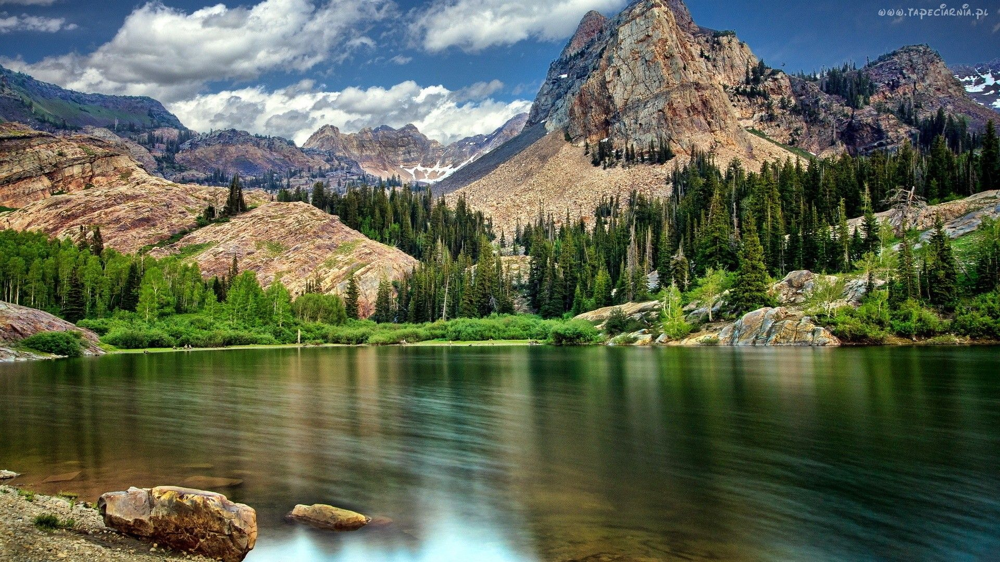
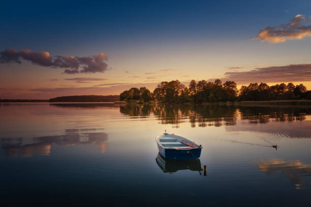
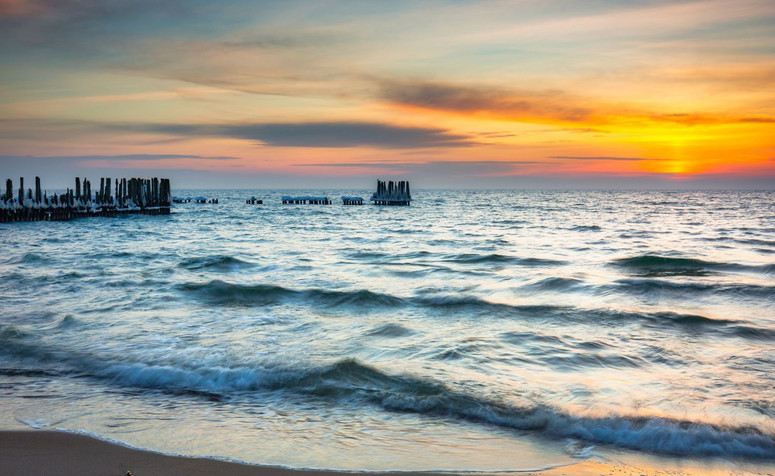

Traveling Around The World
POLSKA
Góry
Miłośnicy wędrówek po szlakach i zdobywania szczytów górskich z całą pewnością znajdą coś dla siebie wśród pasm górskich jakie znajdują się w Polsce. W naszym kraju znajduje się wiele górskich zakątki, które pozwalają turystom na najróżniejsze formy wypoczynku w tych niesamowitych krajobrazach. Na terenie Polski znajduje się aż 28 szczytów należących do Korony Polskich Gór i wiele atrakcyjnych miejsc zlokalizowanych w takich pasmach górskich jak: Tatry, Beskidy, Bieszczady, Pieniny, Góry Świętokrzyskie oraz Karkonosze.
ZOBACZ

Mazury
Mazury potocznie określa się mianem Krainy Wielkich Jezior Mazurskich lub Krainy Tysiąca Jezior. O ile pierwsza nazwa nikogo nie dziwi, to druga lekko przekłamuje rzeczywistość. Na Mazurach można doliczyć się bowiem ok. 2 600 jezior, czyli prawie 3 razy więcej niż zwykło się sądzić. Ciekawe, ile dni trzeba by było poświęcić, aby zobaczyć je wszystkie. Mazurskie jeziora wyróżniają się także na tle innych polskich zbiorników wodnych. Na Mazurach znajduje się największe jezioro w Polsce. To oczywiście Śniardwy, o powierzchni aż 113,8 km2. W Krainie Wielkich Jezior leży również najdłuższe jezioro w Polsce, czyli Jeziorak, którego długość to ok. 27,45 km.
ZOBACZ

Morze Bałtyckie
Bałtyk jest morzem stosunkowo młodym, istnieje około 14 tysięcy lat. Jego powstanie i rozwój uwarunkowane było zmianami klimatycznymi w czwartorzędzie, które ukształtowały nieckę dzisiejszego morza, wypełniając ją wodami pochodzącymi z topniejącego lądolodu skandynawskiego, a także pionowymi ruchami Ziemi.
W swojej historii Morze Bałtyckie przechodziło kilka etapów, ukształtowując się na obszarze pierwotnego lądu nazywanego Fennoskandią. Zdarzało się, że traciło kontakt z Oceanem Atlantyckim, stając się ogromnym jeziorem.
ZOBACZ
